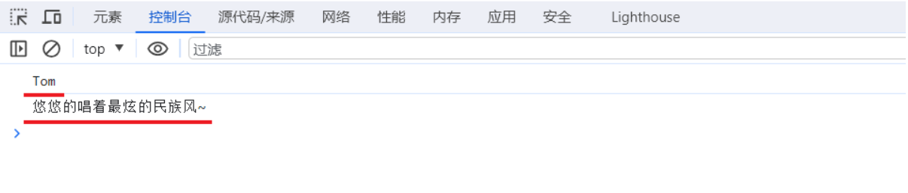
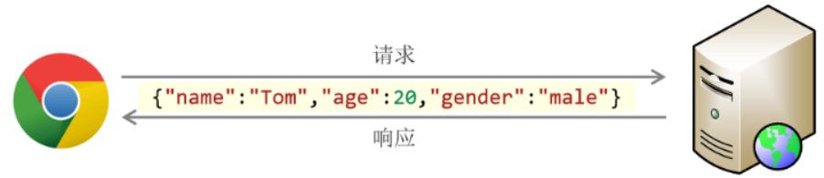
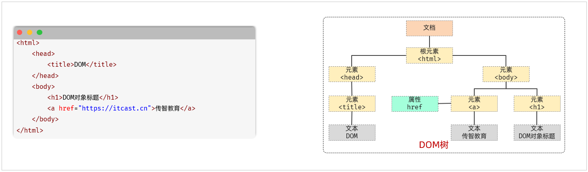
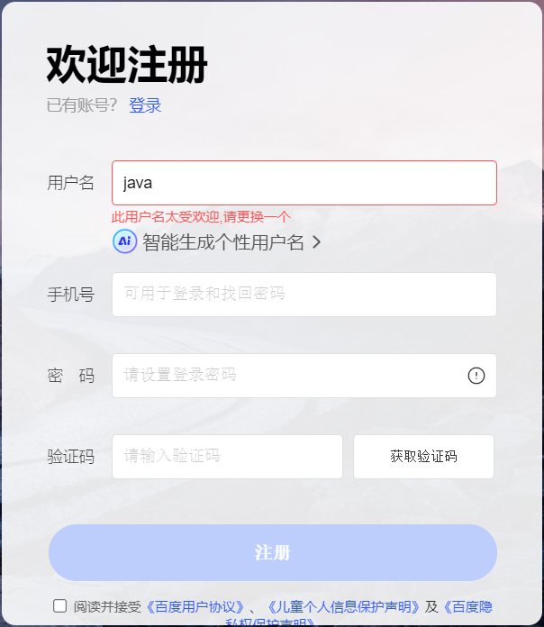
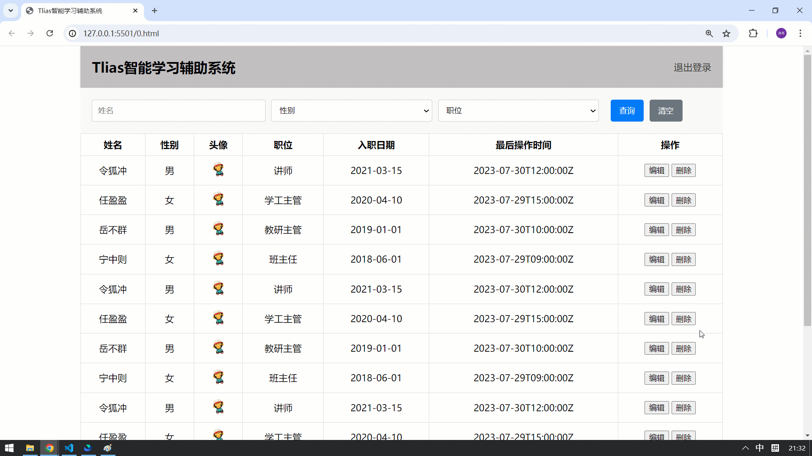
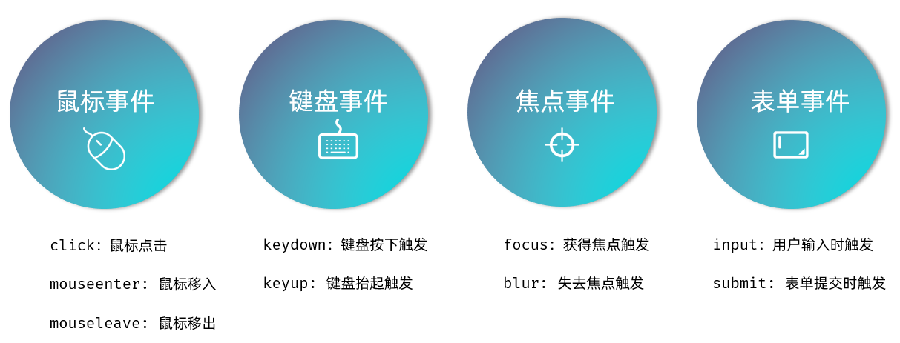

JavaScript：语法、DOM 与模块
JavaScript{弱类型语言 , 但大小写敏感}（简称：JS） 是一门跨平台、面向对象的脚本语言，是用来控制网页行为的，实现人机交互效果。JavaScript 和 Java 是完全不同的语言，不论是概念还是设计。但是基础语法类似。
组成：
ECMAScript: 规定了JS基础语法核心知识，包括变量、数据类型、流程控制、函数、对象等。
BOM：浏览器对象模型，用于操作浏览器本身，如：页面弹窗、地址栏操作、关闭窗口等。
DOM：文档对象模型，用于操作HTML文档，如：改变标签内的内容、改变标签内字体样式等。
JS 核心语法
JS引入方式
同样，js代码也是书写在html中的，那么html中如何引入js代码呢？主要通过下面的2种引入方式：
第一种方式：内部脚本，将JS代码定义在HTML页面中
JavaScript代码必须位于<script></script>标签之间
在HTML文档中，可以在任意地方，放置任意数量的<script></script>
一般会把脚本置于<body>元素的底部，可改善显示速度
Js语句中的语句结束处可以加 ; 也可以不加
例子：
<!DOCTYPE html>
<html lang="en">
<head>
<meta charset="UTF-8">
<meta name="viewport" content="width=device-width, initial-scale=1.0">
<title>JS 引入方式</title>
</head>
<body>
<script>
alert('Hello JS')
</script>
</body>
</html>
第二种方式：外部脚本， 将JS代码定义在外部 JS文件中，然后引入到 HTML页面中
外部JS文件中，只包含JS代码，不包含<script>标签
引入外部js的<script>标签，必须是双标签
例子：
在js目录下，定义一个js文件
demo.js，在文件中编写js代码，如下：
alert('Hello JS')
- 在html文件中，通过<script></script>引入js文件
demo.js，如下：
<script src="js/demo.js"></script>
注意1：demo.js中只有js代码，没有<script>标签
注意2：通过<script></script>标签引入外部JS文件时，标签不能自闭合，如：<script src="js/demo.js" />
JS书写规范：
结束符：每行js代码，结尾以分号结尾，而结尾的分号可有可无。（建议在一个项目中保持一致，要么全部都加，要么全部都不加）
注释：单行注释，多行注解的写法， 与java中一致。
JS基础语法
输出语句
变量
接下来，我们再来讲解JS中的变量。在js中，变量的声明和java中还是不同的。
JS中主要通过
let关键字来声明变量的。JS是一门弱类型语言，变量是可以存放不同类型的值的。
变量名需要遵循如下规则：
组成字符可以是任何字母、数字、下划线（_）或美元符号（$），且数字不能开头
变量名严格区分大小写，如：name和Name是不同的变量
不能使用关键字作为变量名，如：let、if、for等
变量的声明示例如下所示：
<script>
//变量
let a = 20;
a = "Hello";
alert(a);
</script>
上述的示例中，大家会看到变量a既可以存数字，又可以存字符串。 因为JS是弱类型语言。
常量
在JS中，如果声明一个场景，需要使用const关键字。一旦声明，常量的值就不能改变 （不可以重新赋值）。
如下所示：
<body>
<script>
//常量
const PI = 3.14;
PI = 3.15;
alert(PI);
</script>
</body>
浏览器打开之后，会报如下错误：

该错误就表示，常量不可以被重新分配值。
console.log(b) ; //控制台输出
alert(a) ; //弹出框
document.write(b) // 输出到body区域不常用 ;
数据类型
虽然JS是弱数据类型的语言，但是JS中也存在数据类型，JS中的数据类型分为 ：原始数据类型 和 引用数据类型。那这部分，我们先来学习原始数据类型，主要包含以下几种类型：
直接使用 let 可以代表全部的数据类型 :
数据类型 | 描述 |
number | 数字（整数、小数、NaN(Not a Number)） |
string | 字符串，单双引('...')、双引号("...")、反引号(`...`)皆可，正常使用推荐单引号 |
boolean | 布尔。true，false |
null | 对象为空。 JavaScript 是大小写敏感的，因此 null、Null、NULL是完全不同的 |
undefined | 当声明的变量未初始化时，该变量的默认值是 undefined |
使用typeof 关键字可以返回变量的数据类型，接下来我们需要通过书写代码来演示js中的数据类型。代码如下:
<!DOCTYPE html>
<html lang="en">
<head>
<meta charset="UTF-8">
<meta http-equiv="X-UA-Compatible" content="IE=edge">
<meta name="viewport" content="width=device-width, initial-scale=1.0">
<title>JS-数据类型</title>
</head>
<body>
<script>
//原始数据类型
alert(typeof 3); //number
alert(typeof 3.14); //number
alert(typeof "A"); //string
alert(typeof 'Hello');//string
alert(typeof true); //boolean
alert(typeof false);//boolean
alert(typeof null); //object
alert(typeof undefined); //undefined
var a ;
alert(typeof a); //undefined
</script>
</body>
</html>
对于字符串类型的数据，除了可以使用双引号（"..."）、单引号（'...'）以外，还可以使用反引号 （`）。 而使用反引号引起来的字符串，也称为 模板字符串{ 注意这里只用使用反引号 ` 包裹的时候才可以使用 ${}} ;
模板字符串的使用场景：拼接字符串和变量。
模板字符串的语法：
`...` ：反引号 （英文输入模式下键盘 tab 键上方波浪线 ~ 那个键）
内容拼接时，使用 ${ } 来引用变量 == "%" 的进阶版本 ;
具体示例如下：
<script>
let name = 'Tom';
let age = 18;
console.log('大家好, 我是新入职的' + name + ', 今年' + age + '岁了, 请多多关照'); //原始方式 , 手动拼接字符串
console.log(`大家好, 我是新入职的${name}, 今年${age}岁了, 请多多关照`); //使用模板字符串方式拼接字符串
</script>
函数
**函数（function）**是被设计用来执行特定任务的代码块，方便程序的封装复用。 那我们学习函数，主要就是学习JS中函数的定义及调用的语法。
方式一
格式如下：
function 函数名(参数1,参数2..){
要执行的代码
}
因为JavaScript是弱数据类型的语言，所以有如下几点需要注意：
- 形参不需要声明类型，并且JS中不管什么类型都是let去声明，加上也没有意义。
- 返回值也不需要声明类型，直接return即可
示例：
function add(a, b){
return a + b;
}
如果要调用上述的函数add，可以使用：函数名称(实际参数列表)
let result = add(10,20);
alert(result);
我们在调用add函数时，再添加2个参数，修改代码如下：
var result = add(10,20,30,40);
alert(result);
浏览器打开，发现没有错误，并且依然弹出30，这是为什么呢？
因为在JavaScript中，函数的调用只需要名称正确即可，参数列表不管的。如上述案例，10传递给了变量a，20传递给了变量b，而30和40没有变量接受，但是不影响函数的正常调用。
注意：由于JS是弱类型语言，形参、返回值都不需要指定类型。在调用函数时，实参个数与形参个数可以不一致，但是建议一致。
方式二
类似直接使用 lambda 函数 ;
刚才我们定义函数，是为函数指定了一个名字。 那我们也可以不为函数指定名字，那这一类的函数，我们称之为匿名函数。那接下来，方式二，就来介绍一下匿名函数的定义和调用。
**匿名函数：**是指一种没有名称的函数，由于它们没有名称，因此无法直接通过函数名来调用，而是通过变量或表达式来调用。
匿名函数定义可以通过两种方式：函数表达式 和 箭头函数。
- 示例一（函数表达式）：
var add = function (a,b){
return a + b;
}
- 示例二（箭头函数）：可以省去定义function的过程 定义对象时不见得好用
- 注意在箭头函数中 , 调用的this 会指向它的上一级对象 , 没有会指向全局变量 windows
let add = (a,b) => {
return a + b;
}
上述匿名函数声明好了之后，是将这个函数赋值给了add变量。 那我们就可以直接通过add函数直接调用，调用代码如下：
let result = add(10,20);
alert(result);
而箭头函数这种形式，在现在的前端开发中用的会更多一些
自定义对象
在 JavaScript 中自定义对象特别简单，其语法格式如下：(类似class类的创建)
let 对象名 = {
属性名1: 属性值1,
属性名2: 属性值2,
属性名3: 属性值3,
方法名称: function(形参列表){}
};
我们可以通过如下语法调用属性：
对象名.属性名
通过如下语法调用函数：
对象名.方法名()
代码演示：
<script>
//自定义对象
let user = {
name: "Tom",
age: 10,
gender: "男",
sing: function(){
console.log("悠悠的唱着最炫的民族风~");
}
}
console.log(user.name);
user.sing();
<script>
浏览器控制台结果如下：

其中，上述函数定义的语法可以简化成如下格式：
<script>
//自定义对象
let user = {
name: "Tom",
age: 10,
gender: "男",
sing(){
console.log("悠悠的唱着最炫的民族风~");
}
}
console.log(user.name);
user.sing();
<script>
JSON
之前的JSON格式文件编写 : 先获取DOM对象, 之后手动创建对象, 实现String.fy() ;
前端和服务器 交互使用的 文本格式 : 字符串形式的键值对, 实现数据管理 ;
JSON对象：JavaScript Object Notation，JavaScript对象标记法。JSON是通过JavaScript标记法书写的文本。其格式如下：
{
"key":value,
"key":value,
"key":value
"name" :
"age" :
"gender"
}
其中，key必须使用引号并且是双引号标记，value可以是任意数据类型。
而由于语法简单，层级结构鲜明，现多用于作为数据载体，在网络中进行数据传输。

代码演示:
//3. JSON - JS对象标记法
let person = {
name: 'itcast',
age: 18,
gender: '男'
}
alert(JSON.stringify(person)); //js对象 --> json字符串
let personJson = '{"name": "heima", "age": 18}';
alert(JSON.parse(personJson).name);
API说明：
JSON.stringify(...)：作用就是将js对象转换为json格式的字符串。
JSON.parse(...)：作用就是将json格式的字符串，转为js对象 , 使用这个命令创建出的对象就是一个可以直接访问的对象 ;
流程控制
在JS中，当然也存在对应的流程控制语句。常见的流程控制语句如下：
- if ... else if ... else ...
- switch
- for
- while
- do ... while
而JS中的流程控制语句与JAVA中的流程控制语句的作用，执行机制都是一样的。这个呢，我们现在就不再一个一个的如研究了，后面用到的时候，我们再做说明。
JS DOM
DOM介绍
创建DOM对象(是 JS 对象 , 但内存储方式是链表 , 不能直接 使用JSON语法；) , 实现事件监听 ;
DOM：Document Object Model 文档对象模型。也就是 JavaScript 将 HTML 文档的各个组成部分封装为对象。
将每一个html元素看作为一个元素 ;
DOM 其实我们并不陌生，之前在学习 XML 就接触过，只不过 XML 文档中的标签需要我们写代码解析，而 HTML 文档是浏览器解析。封装的对象分为
- Document：整个文档对象
- Element：元素对象
- Attribute：属性对象
- Text：文本对象
- Comment：注释对象
如下图，左边是 HTML 文档内容，右边是 DOM 树

那么我们学习DOM技术有什么用呢？主要作用如下：
- 改变 HTML 元素的内容
- 改变 HTML 元素的样式（CSS）
- 对 HTML DOM 事件作出反应
- 添加和删除 HTML 元素
DOM操作
DOM的核心思想：将网页的内容当做对象来处理，标签的所有属性在该对象上都可以找到，并且修改这个对象的属性，就会自动映射到标签身上。
document对象
网页中所有内容都封装在document对象中
它提供的属性和方法都是用来访问和操作网页内容的，如：document.write(…)
DOM操作步骤:
获取DOM元素对象
操作DOM对象的属性或方法 (查阅文档)
我们可以通过如下两种方式来获取DOM元素。
根据CSS选择器来获取DOM元素，获取到匹配到的第一个元素：
document.querySelector(``'``CSS选择器``'``);根据CSS选择器来获取DOM元素，获取匹配到的所有元素：
document.querySelectorAll('CSS选择器');
注意：获取到的所有元素，会封装到一个NodeList节点集合中，是一个伪数组（有长度、有索引的数组，但没有push、pop等数组方法）
PS：在早期的JS中，我们也可以通过如下方法获取DOM元素（了解）。
- document.getElementById(...)：根据id属性值获取，返回单个Element对象。
- document.getElementsByTagName(...)：根据标签名称获取，返回Element对象数组。
- document.getElementsByName()：根据name属性值获取，返回Element对象数组。
- document.getElementsByClassName()：根据class属性值获取，返回Element对象数组。
JS 事件监听
事件介绍
什么是事件呢？HTML事件是发生在HTML元素上的 “事情”，例如：
- 按钮被点击
- 鼠标移到元素上
- 输入框失去焦点
- 按下键盘按键
- ........
而我们可以给这些事件绑定函数，当事件触发时，可以自动的完成对应的功能，这就是事件监听。
例如：对于我们所说的百度注册页面，我们给用户名输入框的失去焦点事件绑定函数，当我们用户输入完内容，在标签外点击了鼠标，对于用户名输入框来说，失去焦点，然后执行绑定的函数，函数进行用户名内容的校验等操作。

JS事件是JS非常重要的一部分，接下来我们进行事件的学习。那么我们对于JavaScript事件需要学习哪些内容呢？我们得知道有哪些常用事件，然后我们得学会如何给事件绑定函数。
所以主要围绕2点来学习：①. 事件监听、②. 常用事件
常见的监听事件类型 :
1. 鼠标事件
click - 单击
dblclick - 双击
mousedown - 鼠标按下
mouseup - 鼠标释放
mousemove - 鼠标移动
mouseenter - 进入元素（不冒泡）
mouseleave - 离开元素（不冒泡）
mouseover - 悬停进入（冒泡）
mouseout - 悬停离开（冒泡）
contextmenu - 右键菜单
2. 键盘事件
keydown - 按键按下
keyup - 按键释放
keypress - 按键按下并产生字符值（已废弃，不推荐）
3. 表单事件
submit - 表单提交
reset - 表单重置
change - 值改变且失焦
input - 值即时改变（实时）
focus - 获得焦点（不冒泡）
blur - 失去焦点（不冒泡）
focusin - 获得焦点（冒泡）
focusout - 失去焦点（冒泡）
4. 触摸事件（移动端）
touchstart - 触摸开始
touchmove - 触摸移动
touchend - 触摸结束
touchcancel - 触摸中断
5. 拖拽事件
dragstart - 开始拖拽
dragend - 拖拽结束
drag - 拖拽过程中
dragenter - 拖入目标
dragleave - 离开目标
dragover - 在目标上移动
drop - 释放拖拽
6. 资源/加载事件
load - 资源加载完成
DOMContentLoaded - DOM 树构建完成
error - 加载失败
beforeunload - 页面卸载前
unload - 页面卸载（不推荐）
resize - 窗口大小改变
scroll - 滚动
7. 剪贴板事件
copy - 复制
cut - 剪切
paste - 粘贴
8. 动画/过渡事件
animationstart - 动画开始
animationend - 动画结束
animationiteration - 动画重复
transitionstart - 过渡开始
transitionend - 过渡结束
9. 媒体事件（video/audio）
play - 开始播放
pause - 暂停
ended - 播放结束
volumechange - 音量改变
timeupdate - 播放进度更新
10. 其他常用事件
online - 网络连接
offline - 网络断开
popstate - 历史记录变化
hashchange - URL hash 变化
JS事件监听的语法:
事件源.addEventListener('事件类型', 要执行的函数);
事件监听三要素 :
1.事件源 : 那个dom元素触发事件 , 要获取dom元素;
2.事件类型 : 用什么方式触发 ;
3.事件触发执行什么操作 ;
addEventListener( "click " , () = > { 输出需要执行的操作 } ) ;
<!DOCTYPE html>
<html lang="en">
<head>
<meta charset="UTF-8">
<meta http-equiv="X-UA-Compatible" content="IE=edge">
<meta name="viewport" content="width=device-width, initial-scale=1.0">
<title>JS-事件-事件绑定</title>
</head>
<body>
<input type="button" id="btn1" value="点我一下试试1">
<input type="button" id="btn2" value="点我一下试试2">
<script>
document.querySelector("#btn1").addEventListener('click', ()=>{
alert("按钮1被点击了...");
})
</script>
</body>
</html>
JavaScript对于事件的绑定还提供了另外2种方式（早期版本）：
1). 通过html标签中的事件属性进行绑定
例如一个按钮，我们对于按钮可以绑定单机事件，可以借助标签的onclick属性，属性值指向一个函数。
<input type="button" id="btn1" value="点我一下试试1" onclick="on()">
<script>
function on(){
alert('试试就试试')
}
</script>
2). 通过DOM中Element元素的事件属性进行绑定
依据我们学习过得DOM的知识点，我们知道html中的标签被加载成element对象，所以我们也可以通过element对象的属性来操作标签的属性。
先获取到一个dom对象, 然后使用.onclick实现赋值 , 之后直接跟需要实现的函数即可 ;
例如一个按钮，我们对于按钮可以绑定单机事件，可以通过DOM元素的属性，为其做事件绑定。
<body>
<input type="button" id="btn1" value="点我一下试试1">
<script>
document.querySelector('#btn1').onclick = function(){
alert("按钮2被点击了...");
}
// 通过DOM操作获取元素
const button = document.querySelector('#myButton');
button.addEventListener('click', () => {
console.log('按钮被点击');
});
</script>
</body>
整体代码如下：
<!DOCTYPE html>
<html lang="en">
<head>
<meta charset="UTF-8">
<meta http-equiv="X-UA-Compatible" content="IE=edge">
<meta name="viewport" content="width=device-width, initial-scale=1.0">
<title>JS-事件-事件绑定</title>
</head>
<body>
<input type="button" id="btn1" value="事件绑定1">
<input type="button" id="btn2" value="事件绑定2">
<script>
document.querySelector("#btn1").addEventListener('click', ()=>{
alert("按钮1被点击了...");
})
document.querySelector('#btn2').onclick = function(){
alert("按钮2被点击了...");
}
</script>
</body>
</html>
addEventListener 与 on事件 区别:
- on方式会被覆盖，addEventListener 方式可以绑定多次，拥有更多特性，推荐使用 addEventListener .
隔行换色案例
**需求：**实现鼠标移入数据行时，背景色改为#f2e2e2，鼠标移出时，再将背景色改为白色。
效果：

这个功能，我们就可以直接基于通义零码来帮我们实现了。
提示词（prompt）：
通过js实现鼠标移入移出效果，鼠标移入，背景色为 #f2e2e2，鼠标移出，背景色为 白色。
最终完整代码如下：
<!DOCTYPE html>
<html lang="zh-CN">
<head>
<meta charset="UTF-8">
<meta name="viewport" content="width=device-width, initial-scale=1.0">
<title>Tlias智能学习辅助系统</title>
<style>
body {
margin: 0;
}
/* 顶栏样式 */
.header {
display: flex;
justify-content: space-between;
align-items: center;
background-color: #c2c0c0;
padding: 20px 20px;
box-shadow: 0 2px 5px rgba(0,0,0,0.1);
}
/* 加大加粗标题 */
.header h1 {
margin: 0;
font-size: 24px;
font-weight: bold;
}
/* 文本链接样式 */
.header a {
text-decoration: none;
color: #333;
font-size: 16px;
}
/* 搜索表单区域 */
.search-form {
display: flex;
align-items: center;
padding: 20px;
background-color: #f9f9f9;
}
/* 表单控件样式 */
.search-form input[type="text"], .search-form select {
margin-right: 10px;
padding: 10px 10px;
border: 1px solid #ccc;
border-radius: 4px;
width: 26%;
}
/* 按钮样式 */
.search-form button {
padding: 10px 15px;
margin-left: 10px;
background-color: #007bff;
color: white;
border: none;
border-radius: 4px;
cursor: pointer;
}
/* 清空按钮样式 */
.search-form button.clear {
background-color: #6c757d;
}
.table {
min-width: 100%;
border-collapse: collapse;
}
/* 设置表格单元格边框 */
.table td, .table th {
border: 1px solid #ddd;
padding: 8px;
text-align: center;
}
.avatar {
width: 30px;
height: 30px;
object-fit: cover;
border-radius: 50%;
}
/* 页脚版权区域 */
.footer {
background-color: #c2c0c0;
color: white;
text-align: center;
padding: 10px 0;
margin-top: 30px;
}
.footer .company-name {
font-size: 1.1em;
font-weight: bold;
}
.footer .copyright {
font-size: 0.9em;
}
#container {
width: 80%;
margin: 0 auto;
}
</style>
</head>
<body>
<div id="container">
<!-- 顶栏 -->
<div class="header">
<h1>Tlias智能学习辅助系统</h1>
<a href="#">退出登录</a>
</div>
<!-- 搜索表单区域 -->
<form class="search-form" action="#" method="post">
<input type="text" name="name" placeholder="姓名" />
<select name="gender">
<option value="">性别</option>
<option value="1">男</option>
<option value="2">女</option>
</select>
<select name="job">
<option value="">职位</option>
<option value="1">班主任</option>
<option value="2">讲师</option>
<option value="3">学工主管</option>
<option value="4">教研主管</option>
<option value="5">咨询师</option>
</select>
<button type="submit">查询</button>
<button type="reset" class="clear">清空</button>
</form>
<table class="table table-striped table-bordered">
<thead>
<tr>
<th>姓名</th>
<th>性别</th>
<th>头像</th>
<th>职位</th>
<th>入职日期</th>
<th>最后操作时间</th>
<th>操作</th>
</tr>
</thead>
<tbody>
<tr>
<td>令狐冲</td>
<td>男</td>
<td><img src="https://web-framework.oss-cn-hangzhou.aliyuncs.com/2023/1.jpg" alt="令狐冲" class="avatar"></td>
<td>讲师</td>
<td>2021-03-15</td>
<td>2023-07-30T12:00:00Z</td>
<td class="btn-group">
<button class="edit">编辑</button>
<button class="delete">删除</button>
</td>
</tr>
<tr>
<td>任盈盈</td>
<td>女</td>
<td><img src="https://web-framework.oss-cn-hangzhou.aliyuncs.com/2023/1.jpg" alt="任盈盈" class="avatar"></td>
<td>学工主管</td>
<td>2020-04-10</td>
<td>2023-07-29T15:00:00Z</td>
<td class="btn-group">
<button class="edit">编辑</button>
<button class="delete">删除</button>
</td>
</tr>
<tr>
<td>岳不群</td>
<td>男</td>
<td><img src="https://web-framework.oss-cn-hangzhou.aliyuncs.com/2023/1.jpg" alt="岳不群" class="avatar"></td>
<td>教研主管</td>
<td>2019-01-01</td>
<td>2023-07-30T10:00:00Z</td>
<td class="btn-group">
<button class="edit">编辑</button>
<button class="delete">删除</button>
</td>
</tr>
<tr>
<td>宁中则</td>
<td>女</td>
<td><img src="https://web-framework.oss-cn-hangzhou.aliyuncs.com/2023/1.jpg" alt="宁中则" class="avatar"></td>
<td>班主任</td>
<td>2018-06-01</td>
<td>2023-07-29T09:00:00Z</td>
<td class="btn-group">
<button class="edit">编辑</button>
<button class="delete">删除</button>
</td>
</tr>
<tr>
<td>令狐冲</td>
<td>男</td>
<td><img src="https://web-framework.oss-cn-hangzhou.aliyuncs.com/2023/1.jpg" alt="令狐冲" class="avatar"></td>
<td>讲师</td>
<td>2021-03-15</td>
<td>2023-07-30T12:00:00Z</td>
<td class="btn-group">
<button class="edit">编辑</button>
<button class="delete">删除</button>
</td>
</tr>
<tr>
<td>任盈盈</td>
<td>女</td>
<td><img src="https://web-framework.oss-cn-hangzhou.aliyuncs.com/2023/1.jpg" alt="任盈盈" class="avatar"></td>
<td>学工主管</td>
<td>2020-04-10</td>
<td>2023-07-29T15:00:00Z</td>
<td class="btn-group">
<button class="edit">编辑</button>
<button class="delete">删除</button>
</td>
</tr>
<tr>
<td>岳不群</td>
<td>男</td>
<td><img src="https://web-framework.oss-cn-hangzhou.aliyuncs.com/2023/1.jpg" alt="岳不群" class="avatar"></td>
<td>教研主管</td>
<td>2019-01-01</td>
<td>2023-07-30T10:00:00Z</td>
<td class="btn-group">
<button class="edit">编辑</button>
<button class="delete">删除</button>
</td>
</tr>
<tr>
<td>宁中则</td>
<td>女</td>
<td><img src="https://web-framework.oss-cn-hangzhou.aliyuncs.com/2023/1.jpg" alt="宁中则" class="avatar"></td>
<td>班主任</td>
<td>2018-06-01</td>
<td>2023-07-29T09:00:00Z</td>
<td class="btn-group">
<button class="edit">编辑</button>
<button class="delete">删除</button>
</td>
</tr>
<tr>
<td>令狐冲</td>
<td>男</td>
<td><img src="https://web-framework.oss-cn-hangzhou.aliyuncs.com/2023/1.jpg" alt="令狐冲" class="avatar"></td>
<td>讲师</td>
<td>2021-03-15</td>
<td>2023-07-30T12:00:00Z</td>
<td class="btn-group">
<button class="edit">编辑</button>
<button class="delete">删除</button>
</td>
</tr>
<tr>
<td>任盈盈</td>
<td>女</td>
<td><img src="https://web-framework.oss-cn-hangzhou.aliyuncs.com/2023/1.jpg" alt="任盈盈" class="avatar"></td>
<td>学工主管</td>
<td>2020-04-10</td>
<td>2023-07-29T15:00:00Z</td>
<td class="btn-group">
<button class="edit">编辑</button>
<button class="delete">删除</button>
</td>
</tr>
<tr>
<td>岳不群</td>
<td>男</td>
<td><img src="https://web-framework.oss-cn-hangzhou.aliyuncs.com/2023/1.jpg" alt="岳不群" class="avatar"></td>
<td>教研主管</td>
<td>2019-01-01</td>
<td>2023-07-30T10:00:00Z</td>
<td class="btn-group">
<button class="edit">编辑</button>
<button class="delete">删除</button>
</td>
</tr>
<tr>
<td>宁中则</td>
<td>女</td>
<td><img src="https://web-framework.oss-cn-hangzhou.aliyuncs.com/2023/1.jpg" alt="宁中则" class="avatar"></td>
<td>班主任</td>
<td>2018-06-01</td>
<td>2023-07-29T09:00:00Z</td>
<td class="btn-group">
<button class="edit">编辑</button>
<button class="delete">删除</button>
</td>
</tr>
</tbody>
</table>
<!-- 页脚版权区域 -->
<footer class="footer">
<p class="company-name">江苏传智播客教育科技股份有限公司</p>
<p class="copyright">版权所有 Copyright 2006-2024 All Rights Reserved</p>
</footer>
<script>
//点击列表中每一条记录后面的删除按钮，弹出一个提示框，提示：您是否要删除这条记录？ 如果确定，则移出这条记录
const deleteButtons = document.querySelectorAll('.delete');
for (let i = 0; i < deleteButtons.length; i++) {
deleteButtons[i].addEventListener('click', function () {
if (confirm('您是否要删除这条记录？')) {
//点击确定按钮，删除当前记录
this.parentNode.parentNode.remove();
}
});
}
//通过js实现鼠标移入移出效果，鼠标移入，背景色为 #f2e2e2，鼠标移出，背景色为 白色。
const trs = document.querySelectorAll('tr');
for (let i = 1; i < trs.length; i++) {
trs[i].addEventListener('mouseenter', function () {
this.style.backgroundColor = '#f2e2e2';
});
trs[i].addEventListener('mouseleave', function () {
this.style.backgroundColor = '#fff';
});
}
</script>
</div>
</body>
</html>
常见事件
上面案例中使用到了事件 click、mouseenter、mouseleave，那都有哪些事件类型供我们使用呢？下面就给大家列举一些比较常用的事件属性:

示例演示：
<!DOCTYPE html>
<html lang="en">
<head>
<meta charset="UTF-8">
<meta http-equiv="X-UA-Compatible" content="IE=edge">
<meta name="viewport" content="width=device-width, initial-scale=1.0">
<title>JS-事件-常见事件</title>
</head>
<body>
<form action="" style="text-align: center;">
<input type="text" name="username" id="username">
<input type="text" name="age" id="age">
<input id="b1" type="submit" value="提交">
<input id="b2" type="button" value="单击事件">
</form>
<br><br><br>
<table width="800px" border="1" cellspacing="0" align="center">
<tr>
<th>学号</th>
<th>姓名</th>
<th>分数</th>
<th>评语</th>
</tr>
<tr align="center">
<td>001</td>
<td>张三</td>
<td>90</td>
<td>很优秀</td>
</tr>
<tr align="center" id="last">
<td>002</td>
<td>李四</td>
<td>92</td>
<td>优秀</td>
</tr>
</table>
<script>
//click: 鼠标点击事件
document.querySelector('#b2').addEventListener('click', () => {
console.log("我被点击了...");
})
//mouseenter: 鼠标移入
document.querySelector('#last').addEventListener('mouseenter', () => {
console.log("鼠标移入了...");
})
//mouseleave: 鼠标移出
document.querySelector('#last').addEventListener('mouseleave', () => {
console.log("鼠标移出了...");
})
//keydown: 某个键盘的键被按下
document.querySelector('#username').addEventListener('keydown', () => {
console.log("键盘被按下了...");
})
//keydown: 某个键盘的键被抬起
document.querySelector('#username').addEventListener('keyup', () => {
console.log("键盘被抬起了...");
})
//blur: 失去焦点事件
document.querySelector('#age').addEventListener('blur', () => {
console.log("失去焦点...");
})
//focus: 元素获得焦点
document.querySelector('#age').addEventListener('focus', () => {
console.log("获得焦点...");
})
//input: 用户输入时触发
document.querySelector('#age').addEventListener('input', () => {
console.log("用户输入时触发...");
})
//submit: 提交表单事件
document.querySelector('form').addEventListener('submit', () => {
alert("表单被提交了...");
})
</script>
</body>
</html>
前面两天，我们已经学习了前端网页开发的三剑客：HTML、CSS、JS。那通过这三种技术呢，我们就可以开发出一个网页程序了，但是如果我们使用原生的JS来处理界面的交互行为，开发效率呢，是比较低的。而在现在的企业项目开发中，一般会借助于Vue这样的js框架来简化操作、提高开发效率。 那么我们今天接下来呢，就来学习Vue这个框架。
一个JS文件引入另外文件的js文件 ( 需要给方法加上export 实现暴露方法 ):
import 实现导包 ;
export function add(a, b) {
return a + b;
}
// 方法2：导出变量
export const PI = 3.14159;
// 方法3：导出箭头函数
export const multiply = (a, b) => a * b;
// 方法4：默认导出（一个文件只能有一个默认导出）
export default function sayHello(name) {
return `你好，${name}！`;
}
// 方法5：先定义后导出
function subtract(a, b) {
return a - b;
}
function divide(a, b) {
return a / b;
}
export { subtract, divide };
import sayHello from './utils.js';
// 方式2：导入命名导出（必须使用相同的名字）
import { add, PI, multiply, subtract, divide } from './utils.js';
// 方式3：混合导入（默认 + 命名）
import sayHello, { add, PI } from './utils.js';
// 方式4：导入所有内容作为一个对象
import * as utils from './utils.js';
使用方式 : 放置在 script 内部告诉编译器 , 此处为modle 类型的JS , 需要额外网络调用 ;
<script type="module">
// 方式1：直接在 HTML 中导入使用
import sayHello, { add, PI } from './utils.js';
console.log(add(10, 20)); // 30
console.log(PI); // 3.14159
console.log(sayHello("王五")); // 你好，王五！
</script>
</script>
<!-- 方式2：引入外部主文件 -->
<script type="module" src="./main.js"></script>
</body>
使用 import ,export 实现的高级的JS 模块化 , 需要在html 文件中添加上type : module 告诉要引入的是模块化的JS ;
可以实现将一个大的 JS 文件拆分成小的 ;